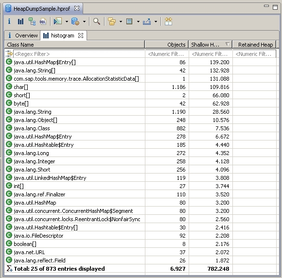

This tutorial provides a "jumping-off place" to get familiar with Memory Analyzer.
Open a sample heap dump
If you run a standalone version of Memory Analyzer you
already have the perspective settings, otherwise you
should switch to the Memory Analysis Perspective:
 Window > Open Perspective > Other... > Memory Analysis
Window > Open Perspective > Other... > Memory Analysis
This will activate relevant to memory analysis views, menus and actions.
Open a sample heap dump using the action link:
Open Sample Heap Dump . Or using the File Menu:
From the menu bar, select
File >  Open Heap Dump...
and provide the location of the heap dump in the dialog:
Open Heap Dump...
and provide the location of the heap dump in the dialog:

Walk-through Memory Analysis Perspective
Now you have a sample heap dump opened in the Memory Analysis Perspective

Heap dump is opened in the editor area. All new result views for heap dump will open as new tabs within this editor, next to the Overview pane.
Under you find all memory analysis views. By default the Inspector, Navigator and Notes views are visible. But you can open and re-arrange additional views in the memory analysis perspective as in any other Eclipse perspective.

Heap Dump History View - Contains the list of heap dumps recently opened and supports context actions to manage the history.

Inspector View - Provides details about the selected object and supports various context actions.

Navigation History View - Keeps history of all the opened result views and allows to navigate among them.

Notes View - You can take notes for every heap dump. The notes are saved together with the heap dump.
Major Heap Editors
The heap editor Histogram lists the classes found in the snapshot, the number of objects for each class, the heap memory consumption of these objects, and optional the minimum retained size of the objects. You can activate the calculation of the retained size using the context menu – for the selected entry, or a toolbar action – for the whole histogram.

To switch between the Class and Class Loader histogram,
choose button:


The class loader view and class view display the same information with different grouping. In the class loader view the classes are grouped by the class loaders that load and define the various classes.
The retained size of a class loader is the amount of memory that is collected by the garbage collector (GC) when all objects of the classes in the class loader are no longer accessible by the GC.
You can filter the class or class loader histogram with a regular search expression in the first line of the histogram.

Context menus offer additional functionality in every view. For some objects you can examine the content, like for HashMap you can examine the keys/values of the data structure.
Button:
 (Baseline) perform the comparison of two snapshots
(Baseline) perform the comparison of two snapshots
The Dominator Tree view is used for the memory footprint analysis,. It is based on the same semantics as the retained set/size calculation. The Dominator Tree view represents:
-
The dominated objects
A particular object, other objects depend on and are garbage collected if the particular object can not be accessed anymore.
-
The dominator chain of the objects to the root
Which objects prohibit the garbage collection of a the particular object.
To open a Dominator Tree view, choose the button:


In the screenshot shown above, the biggest objects in the heap are displayed on the first tree level. Objects that are solely held by themselves are displayed on the next level and so on. If there are several objects referencing to a chain, only the root object of the chain is displayed on the first level. The other objects can be viewed by expanding the node.
Dominator Tree Grouping
The Dominator Tree can be grouped by classes, classloaders or packages. If there is not one huge object in the Dominator Tree, grouping helps to identify classes, classloaders or packages that occupy a lot of memory.

The Paths to GC Roots analyzes which objects keep a single object in the heap. You can open this view using context menu Path to GC Roots .

The data is structured as tree. The Paths from GC Roots view shows the first group of paths from GC Roots to the object of interest. If more than one path leads from one GC Root to the object of interest, the shortest path is displayed. This path to sub-objects that are objects under the object of interest are not necessarily the only references to these objects, therefore you can request to display the other path to the object as well. To learn more about the paths of a sub object from the GC Roots, you have to open the view to the object that is of interest.
Merged Paths to GC RootsThe Merged Paths to GC Roots view shows the shortest paths from the GC roots to each instance of the selected class. You can open this heap editor using context menu Merge Shortest Paths to GC Roots on any class instance. The heap editor explores all the paths at once and is useful to analyze the memory leak by finding a common chain of references to a group of objects.